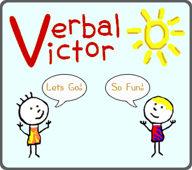

I am a data scientist at Microsoft, formerly at Wave Apps.
Richard (Tommy) Guy
Blog part 2 (this time with ipython notebooks (and Rmarkdown)!):
Businesses spend a profound amount money non-ideologically in political races.
Spark's randomSplit function and nondeterminism
IID failures lead to over-confidence in A/B test results.
Confidence bounds on metrics from sampled data sets.
PCA on county-level statistics in the US.
Examining the outliers between median income and education levels by county in the US.
Other projects

Paúl Pauca, myself, and team of programmers created Verbal Victor, an augmented communication device for children with communication problems. The website is here. VerbalVictor currently runs on iOS, with dedicated iPhone and iPad versions available in the iStore.
We've sold over 2000 copies, garnered press in the AP and CNN (video), and Dr. Pauca has extended the success of VerbalVictor in a Software Engineering course at Wake Forest that produced several more new promising assistive applications.
We've sold over 2000 copies, garnered press in the AP and CNN (video), and Dr. Pauca has extended the success of VerbalVictor in a Software Engineering course at Wake Forest that produced several more new promising assistive applications.

Greg Wilson created Software Carpentry, to teach software engineering concepts to
scientists and other makers and users of software. We currently host multi-day workshops all over the world to give working
scientists hands-on training.